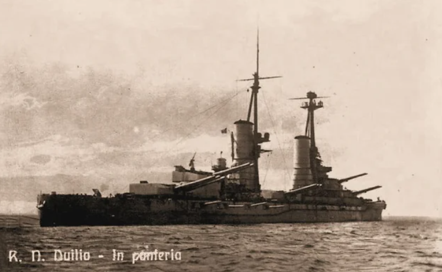
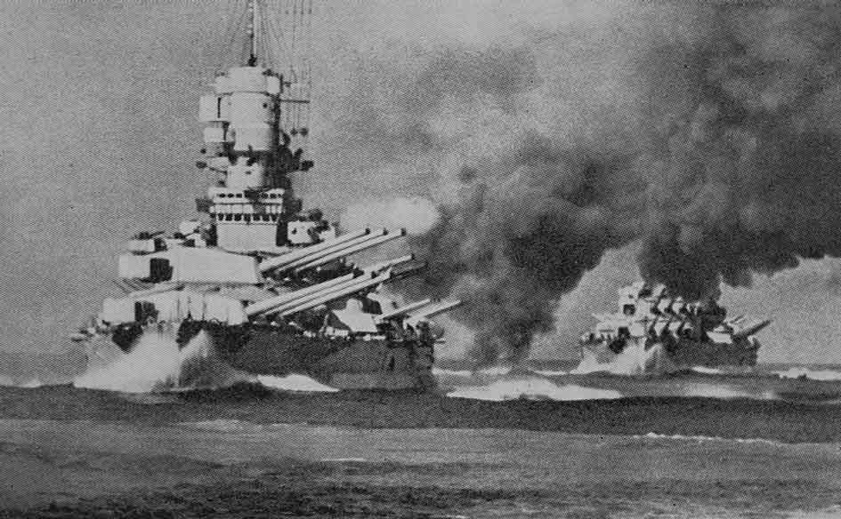
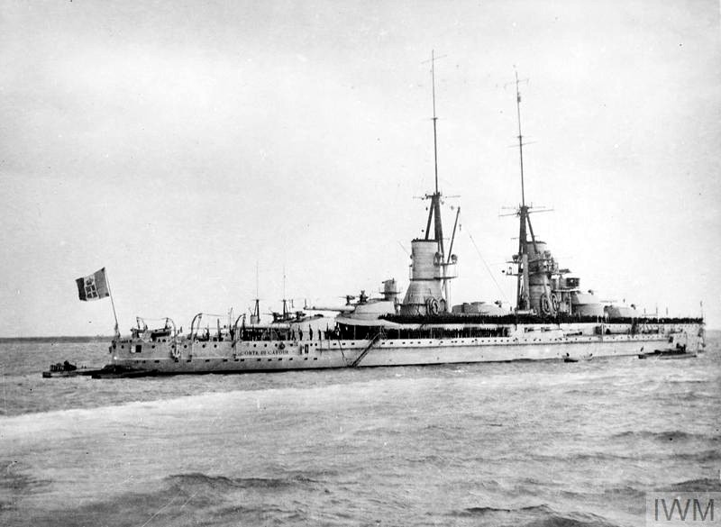
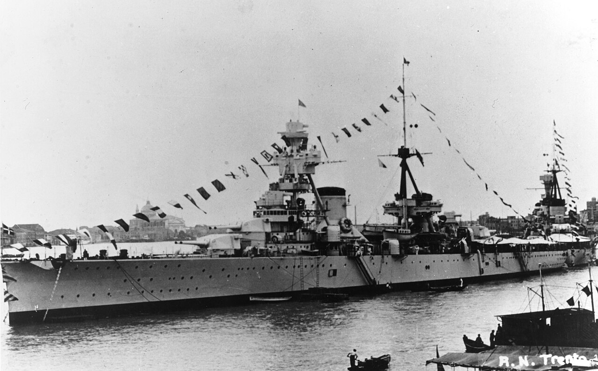

WW2 중 항모에서의 야간 작전 (25) - 객기와 불발탄
게시: 2025-08-07T06:30:32+09:00
<모로 가도 서울만 가면 된다> 지난 편에서 언급한 대로 제2차 공격대는 이미 23시 10분부터 타란토에서 110km 떨어진 지점에서 타란토의 불꽃놀이를 보고 있었음. 그 시각에는 제1차 공격대가 한창 공격을 진행 중이었고, 이탈리아군이 쏘아올리는 대공포들의 예광탄 줄기들이 선명한 원뿔 모양으로 보였던 것. 제2차 공격대가 그 불꽃놀이를 목표로 비행을 계속한 뒤, 23시 50분에야 인근에 도착하여 2대의 조명탄 탑재 소드피쉬들부터 타란토로 돌입을 시작. 그 시간대에는 이미 제1차 공격대가 다 빠져나간 뒤라서 이탈리아 대공포들도 사격을 멈춘 뒤였으므로, 새로 도착한 소드피쉬들의 엔진 소리는 어둠 속에서 분명히 들려왔음. 이탈리아군도 다시 대공포를 조준하며 기다리고 있었으나, 이번에도 탐조등은 비춰지지 않았고 2대의 조명탄조 소드피쉬들은 별다른 대공포화에 시달리지 않고 편안하게 조명탄들을 투하. 일단 조명탄들이 투하되자 또 이탈리아 대공포들은 그 불빛을 향해 미친 듯이 불을 뿜기 시작. 이어서 어뢰를 장착한 5대의 소드피쉬들이 항내에 뛰어든 것은 0시 10분. 선두에 선 3대는 모두 정면에 보이는 전함 Littorio를 노리고 강하했는데, 도중에 Bayley와 Slaughter가 탄 1대가 오른쪽으로 크게 기울더니 다른 2대의 앞을 가로질러 미끄러져 내려감. 도중에 목표물을 그쪽 방향에 있는 다른 전함으로 바꾼 건가 하고 의아해하는 순간 미끄러진 소드피쉬가 공중 폭발. 이탈리아군의 대공포에 명중되었던 것. 베일리와 슬로터는 모두 사망했고, 이들이 이번 작전에서의 유일한 영국해군 사망자들. 나머지 2대는 그대로 돌입하여 리토리오에서 210m 정도 떨어진 근거리에서 어뢰를 투하. 그 중 하나는 리토리오에 명중했으나, 다른 하나는 아마도 자기감응신관이 고장이었는지 나중에 항구 진흙바닥에서 불발탄 상태로 발견됨. 다른 한 대의 소드피쉬는 전함 Duilio를 노리고 어뢰를 투하. 그대로 명중시킨 뒤 빗발치는 대공포화를 뚫고 무사히 탈출.

(Duilio (2만4천톤, 21노트)는 1913년에 진수된 낡은 전함으로서, 5개의 주포탑에 총 13문의 12인치 포를 장착. 종전때까지 살아남아 전후에도 이탈리아 해군에서 훈련함으로 사용되었으나 결국 1956년 퇴역하여 다음 해에 고철로 해체됨. 듈리오라는 함명은 고대 로마의 제1차 포에니 전쟁에서 로마 최초로 바다에서의 승리를 거둔 집정관 가이우스 듈리우스를 기리기 위한 것.) 마지막 한 대의 소드피쉬는 우여곡절이 많았음. 다른 소드피쉬들처럼 방공기구가 설치된 구역은 피해서 날아들었건만, 어둠 속에서 뜻밖의 장소에 있던 방공기구와 충돌한 것. 아마도 대공포 등에 맞아 방공기구를 묶어놓았던 케이블이 끊어지면서 바람에 떠내려왔던 모양. 다행히 기구를 묶어 고정했던 팽팽한 강철 케이블과 충돌한 것이 아니라 탄성이 있는 기구 본체와 부딪힌 것이라서 소드피쉬 기체에 큰 문제는 없었으나, 큰 충격에 조종사는 잠깐 제어를 잃고 비틀거리다 다시 자세를 가다듬고 어뢰를 투하할 목표물을 서둘러 찾음.

(앞 전함이 Vittorio Venetto (4만5천톤, 30노트), 뒷 전함은 리토리오. 비토리오 베네토는 1937년 진수된 리토리오급 전함으로서, 타란토 기습에서는 피해를 입지 않았음. 그러나 다음 해인 1941년 3월 마타판 해전에서 영국군 뇌격기의 공격으로 어뢰 1방을 맞았고, 그 해 12월에도 영국 잠수함에게 어뢰를 얻어맞음. 어쨌거나 그렇게 공격 당했어도 살아남아 말타섬에 대한 봉쇄작전에 참여했으나, 이후 이탈리아를 괴롭힌 연료 부족으로 활동이 뜸해짐. 결국 그런 상태로 종전을 맞았고, 전쟁 배상금조로 영국해군에게 끌려간 뒤, 거기서도 결국 고철로 해체됨.) 그 짧은 순간, 희미한 조명탄 불빛 속에 오른쪽으로 전함 Vittorio Veneto가 보였음. 그쪽으로 있는 힘껏 기수를 틀고 한쪽 날개 끝이 거의 수면에 닿을 듯이 아슬아슬한 선회를 하며 베네토에게 조준을 했으나, 베네토에서도 그 소드피쉬를 보고 온갖 대공포를 다 쏟아냄. 그런 대공포탄 중 한 발이 왼쪽 날개에서 폭발하여 아래쪽 날개의 골조를 일부 부수고 날개를 이루는 캔버스 천에 커다란 구멍을 뚫음. 그렇게 어려운 상황 속에서 순간적인 감에 의해 투하된 어뢰는 아쉽게도 비토리오 베네토를 명중시키지 못하고 빗나감. 그런데 그렇게 빗나간 어뢰는 한참 더 달려가 그 뒤에 정박해있던 전함 Conte di Cavour를 명중시킴. 결국 제2차 공격대의 어뢰 5발 중 4발이 투하되어 그 중 3발이 명중함. 제1차 공격대보다도 더 높은 무려 75% 명중률의 굉장한 쾌거. 그러나 제1,2차 공격대의 명중률은 실제로는 물론 이렇게 높지 않았음. 전투기 조종사 뿐만 아니라 폭격기 조종사들의 증언도 반쯤은 걸러 들어야 함.

(전함 Conte di Cavour의 1919년 모습. 카부르는 1911년 진수된 낡은 전함으로서, 배수량도 2만5천톤에 속력도 22노트 정도라서 전함 중에서도 가치가 꽤 떨어지는 축에 속했음. 따라서 소드피쉬들은 가급적이면 리토리오나 비토리오 베네트 같은 더 크고 더 신식인 전함들을 노리라고 교육받았음. 그래서 카부르도 어뢰에 명중되었다고 보고되었을 때, 왜 굳이 그런 구닥다리 전함을 노렸냐고 의아해하기도 했으나, 알고보면 카부르는 빗나간 어뢰에 당했던 것.) <두어 시간 만에 할 후회> 지난 편에 폭탄 장착 소드피쉬 중 한 대는 날개의 천이 찢어지는 바람에 25분 늦게 출발했고, 나머지 1대는 보조 연료탱크 문제로 도중에 귀함했다고 언급했음. 그렇게 늦게 출발했던 폭탄조 소드피쉬 1대는 미친 듯이 엔진을 혹사시키며 전속력을 내어, 결국 어뢰조 소드피쉬들이 마지막 어뢰를 투하하고 항구를 빠져나올 때 항구로 돌입. 원래 이 소드피쉬의 날개가 찢어지는 사고가 나자마자, HMS Illustrious의 함장은 이 소드피쉬를 이번 임무에서 배제시키려 했었음. 이미 출발한 어뢰조와 합류할 수가 없는데, 가뜩이나 느려빠진 소드피쉬가 뒤늦게 혼자서 적진에 뛰어드는 것은 자살행위라고 생각했기 때문. 그러나 혼자서 이 위험한 임무에서 빠지는 것은 부당한 불명예라고 생각한 조종사 Clifford 대위와 항법사 Going 대위는 함장과 항공지휘관에게 사정사정하여 재빨리 수리를 마치고 혼자서 타란토로 향했던 것. 이들을 기다리고 있던 것은 형형색색의 예광탄이 빗발처럼 쏟아지는 타란토 항구의 모습. 이 모습에 이 두 명의 승무원들은 자신들의 감정을 'awestruck' (경이로워 하는, 위엄에 놀란, 두려워하는) 이라고만 표현했는데, 아마 두어 시간 전에 '제발 타란토로 날아가게 허락해주세요'라고 애걸복걸했던 자신들의 철없음을 크게 후회했을 것. 그러나 여기까지 온 마당에 돌아갈 수는 없으니 그 탄막 속으로 이들은 과감히 뛰어듬. 때마침 조명탄 불빛도 거의 꺼져가고 있었는데, 제1차 공격대의 폭탄조와는 달리 이들은 Mar Piccolo 항 한 가운데에 있는 중순양함 무리를 포착. 제1차 공격대는 목표물인 중순양함들을 어둠 속에서 찾지 못해서 결국 2차 목표물인 수상정 기지에 폭탄을 투하했었는데, 그 수상정 기지에 발생한 화재 덕분에 마르 피콜로 가운데의 어둠 속에 대공포도 쏘지 않고 숨어있던 중순양함 무리가 희미하게 보였던 것. 목표물을 확인한 폭탄조 소드피쉬는 150m 고도까지 급강하하며 가진 폭탄 6발을 모두 투하. 대충 감으로는 명중시켰을 것 같았으나 6발 중 폭발하는 모습은 하나도 보이지 않았음. 그날 투하된 폭탄들 중 대부분이 불발탄이었던 것. 이것이 너무 저공에서 투하하는 바람에 접촉신관이 활성화 되지 않았기 때문인지 신관 불량 때문인지는 불확실. 다만 전쟁이 끝난 뒤 알아보니, 그 때 투하된 폭탄 중 하나는 순양함 Trento에 명중했고 그 연료 탱크까지 뚫고 들어가 연료 유출을 일으켰다고. 비록 폭발하지 않아 큰 피해는 입히지 못했으나, 하늘에서 113kg짜리 쇳덩어리가 떨어졌으니 그야말로 철퇴를 맞은 셈.

(중순양함 Trento(1만3천톤, 31노트)의 1930년대 초반 모습. 트렌토는 워싱턴 해군 조약에 의해 배수량이 1만톤으로 제약되어야 했으나 실제로는 초과했었다고. 8인치 주포 8문을 장착하면서도 가볍게 만들기 위해 장갑판은 70mm로 얇게 만들었으며, 그래서 비교적 가벼운 250파운드짜리 폭탄이 연료탱크까지 뚫고 들어갔던 모양. 트렌토는 1942년 지중해에서 영국군의 수송선단을 공격하다 영국 공군의 Bristol Beaufort 뇌격기와 영국 해군 잠수함 Umbra에게 각각 어뢰로 공격 당해 격침됨.) <Lamb 대위의 우울> 제1차 공격대의 조명탄조였던 램 대위는 돌아오면서도 계속 우울했음. 이 공격에서의 생존자가 자신들 뿐이라고 생각했기 때문. 램 대위의 마음이 밝아진 것은 항모 근처에 와보니 착함을 준비 중인 다른 소드피쉬들이 있었고 또 갑판에도 희미하게 이미 착함한 소드피쉬들이 보였기 때문. 여기서 2가지 의문점. 1) 임무 시작 전이나 타란토 인근에서는 전파 탐지 위험 때문에 무선 침묵을 지키는 것은 이해가 가지만, 왜 거기서 한참 떨어진 항모 근처에서도 무선 침묵을 지켰던 것일까? 2) 그 어둠과 낮게 깔린 구름 속에서 소드피쉬들은 대체 어떻게 항모 HMS Illustrious를 찾아돌아올 수 있었을까? 사실 이런 궁금증 때문에 바로 이 시리즈를 시작하게 되었던 것. 그 해답은 다음 주에.